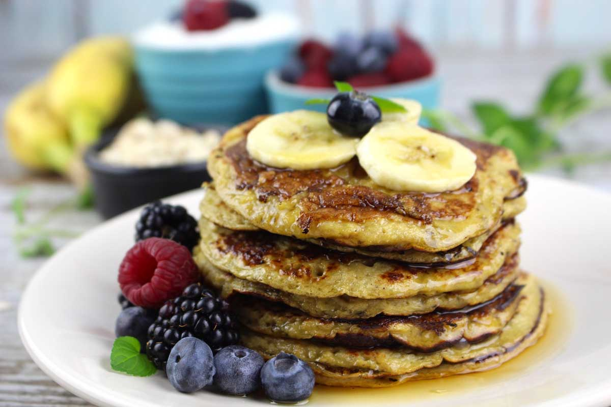

Los panqueques de avena son una deliciosa y saludable opción para un
desayuno o brunch lleno de sabor. Hechos con avena, yogur y plátano, estos
panqueques son una alternativa nutritiva a la receta tradicional. Además,
son fáciles de preparar y se pueden personalizar con tus ingredientes
favoritos.
Ingredientes
- 1 taza de avena
- 1 plátano maduro
- 1/2 taza de yogur natural
- 2 huevos
- 1 cucharadita de polvo de hornear
- 1 cucharadita de esencia de vainilla
- Una pizca de sal
- Aceite o mantequilla para engrasar la sartén
Instrucciones
-
En un procesador de alimentos, combina la avena, el plátano, el yogur,
los huevos, el polvo de hornear, la esencia de vainilla y una pizca de
sal. Mescla hasta obtener una masa suave y homogénea.
-
Calienta una sartén antiadherente a fuego medio-alto y engrásala con
un poco de aceite o mantequilla
-
Vierte un cucharón de masa en la sartén caliente y extiéndelo para
formar un circulo de aproximadamente 10 cm de diámetro.
-
Cocina el panqueque hasta que aparezcan burbujas en la superficie
(aproximadamente 2-3 minutos), luego dale la vuelta y cocina el otro
lado hasta que esté dorado.
- Repite este proceso con el resto de la masa.
-
Sirve los panqueque calientes y adórnalos con tus ingredientes
favoritos, como frutas frescas, nueces, miel o jarabe de arce.
Volver a la pagina principal